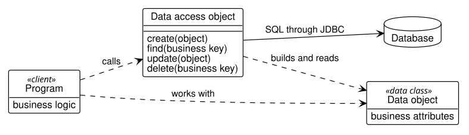
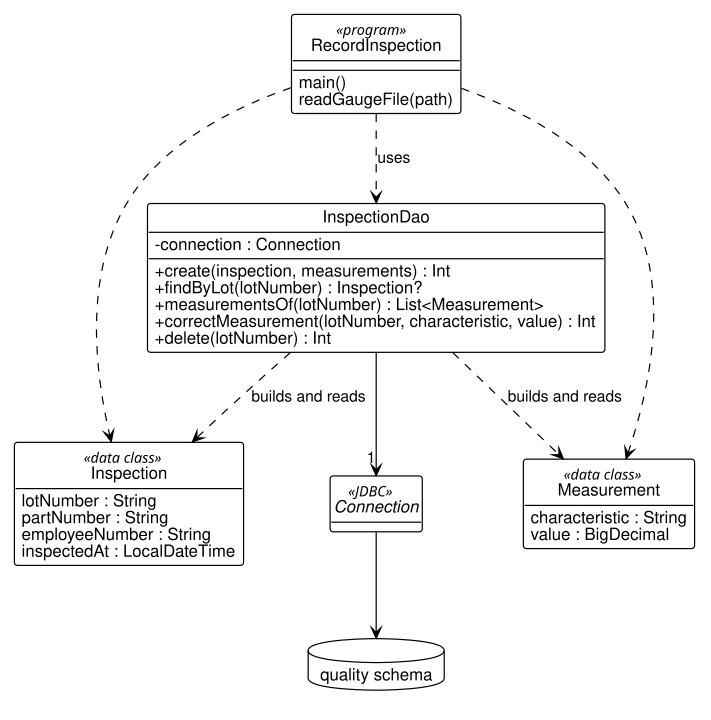
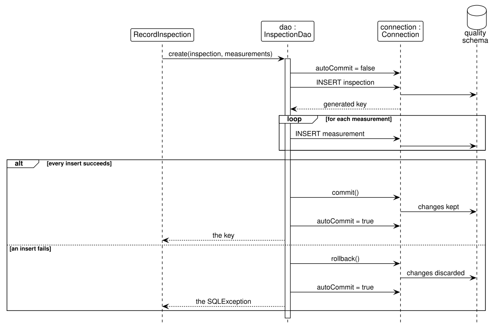

10 Programming with Databases
After reading this chapter you should be able to:
- connect to a PostgreSQL database from a Kotlin program, run a query, and read its result
- write parameterized statements, and explain why they prevent SQL injection
- organize a program’s database work as create, read, update, and delete operations in a data access object, with a transaction where several changes belong together
- use the KSL database utilities to query a database, move rows into data classes and data frames, and summarize them
- move data between a database and CSV and Excel files from a program
- say what libraries such as jOOQ, Exposed, and Ktorm add, and when to reach for one
An engineer’s programs meet a database for three reasons. A program records what a process produced: an inspection, a machine’s cycle, a simulation run. A program reads data to analyze it, as a quality engineer reads measurements to judge a process. And a program moves data between the database and the files that other tools read and write. The chapters so far did all three by hand, in DataGrip or DBeaver; this chapter does them from Kotlin.
The chapter uses the quality schema of stage Q, and one running example: the quality lab. A gauge measures the parts of a new lot and writes its readings to a file; a program records the inspection and its measurements; another program reads a characteristic’s measurements and summarizes them. The programs use the KSL, the Kotlin simulation library, whose database utilities rest on the Java standard for database access, JDBC, which the chapter presents first.
The programs are in the companion code, in the package dbconcepts.programming of code/, and each runs on its own: ./gradlew run -PmainClass=dbconcepts.programming.LotMeasurementsKt, for example. They connect with the settings in code/db.properties (Section B.3) to your dbconcepts database. Each output shown in this chapter comes from running the program against a copy of that database, freshly loaded with code/sql/load/through-q.sql.
10.1 A program’s view of a database
This section presents the pieces every database program uses, in the order a program uses them.
A program that works with a database does five things: it connects to the database, writes the SQL for what it needs, executes the SQL, uses the results, and closes what it opened. Java, and Kotlin with it, does all five through JDBC (Java Database Connectivity), a standard set of interfaces that every database system implements with a driver, a library that speaks that system’s protocol. The KSL includes PostgreSQL’s driver, so a program that uses the KSL needs nothing more to reach the book’s database. Three JDBC objects do the work:
- a connection (
Connection) is an open session with the database, as a query console in DataGrip is; the program’s statements run in it, and its transactions belong to it; - a prepared statement (
PreparedStatement) is an SQL statement with?in place of each value, which the program supplies separately before running it; - a result set (
ResultSet) is the rows a query returns, read by the program one row at a time.
Each of the three holds resources on the database server until it is closed, and a program that forgets to close them eventually exhausts the server’s connections. Kotlin’s use closes an object when the block that uses it ends, however it ends, so the book writes every one of them inside a use block.
Let’s list the measurements of one lot. The program LotMeasurements first writes its query, with a ? where the lot number goes:
val sql = """
SELECT c.name, c.unit, m.measured_value
FROM quality.measurement AS m
JOIN quality.inspection AS i
ON i.inspection_pk = m.inspection_fk
JOIN quality.characteristic AS c
ON c.characteristic_pk = m.characteristic_fk
WHERE i.lot_number = ?
ORDER BY c.name
""".trimIndent()The query is ordinary SQL, of the kind Section 3.6 wrote: it joins measurement to inspection for the lot number and to characteristic for the name and unit. The program then does the other four things, each inside the use of the one before:
BookDatabase.connect().use { db ->
db.getConnection().use { connection ->
connection.prepareStatement(sql).use { statement ->
statement.setString(1, lotNumber)
statement.executeQuery().use { rows ->
println("Measurements of lot $lotNumber")
while (rows.next()) {
val name = rows.getString("name")
val unit = rows.getString("unit")
val value = rows.getBigDecimal("measured_value")
println(" $name: $value $unit")
}
}
}
}
}BookDatabase.connect() opens the book’s database with the settings in db.properties, so that no password appears in the code, and getConnection() takes a JDBC connection from it. prepareStatement(sql) prepares the query, which PostgreSQL’s driver sends to the database when the statement runs; setString(1, lotNumber) supplies the value of the first ?; and executeQuery() runs it and returns the result set. The loop reads the rows. rows.next() moves to the next row and returns false when there is none, and getString, getBigDecimal, and their relatives read a column of the current row by its name, converted to the Kotlin type that matches its SQL type. Run against stage Q, the program prints:
Measurements of lot L7005-03
Diameter: 0.6248 in
Length: 12.0100 inNotice the types. measured_value is NUMERIC(10,4), and getBigDecimal reads it as a BigDecimal, Java’s exact decimal number, so 12.0100 keeps its four decimal places; getDouble would have read it as floating point, with the consequences Section 8.2 described. Table 10.1 pairs the SQL types of the book’s database with the method that reads each and the Kotlin type it returns.
| SQL type | Read with | Kotlin type |
|---|---|---|
INTEGER |
getInt |
Int |
NUMERIC(p, s) |
getBigDecimal |
BigDecimal |
VARCHAR(n), CHAR(n), TEXT |
getString |
String |
DATE |
getObject(column, LocalDate::class.java) |
LocalDate |
TIMESTAMP |
getObject(column, LocalDateTime::class.java) |
LocalDateTime |
BOOLEAN |
getBoolean |
Boolean |
A NULL needs care. getInt returns 0 for a NULL, and getBoolean returns false, so a program cannot tell a missing value from a real zero unless it asks rows.wasNull() after reading, or reads with getObject, which returns null. The methods that return objects, getString and getBigDecimal among them, return null directly. The next section turns to the ? of the query, which is more important than it looks.
10.2 Parameterized queries and SQL injection
This section shows why a program must never build SQL out of the values it is given, and what it does instead.
A program that searches for a lot receives the lot number from somewhere: a text box, a file, a scanned label. The obvious way to use it is to paste it into the SQL text, and Kotlin’s string templates make that easy:
/** Wrong: the lot number becomes part of the SQL text. */
fun countMeasurementsUnsafely(
connection: Connection, lotNumber: String
): Int {
val sql = "SELECT COUNT(*) FROM quality.measurement AS m " +
"JOIN quality.inspection AS i " +
"ON i.inspection_pk = m.inspection_fk " +
"WHERE i.lot_number = '$lotNumber'"
connection.createStatement().use { statement ->
statement.executeQuery(sql).use { rows ->
rows.next()
return rows.getInt(1)
}
}
}The function builds the query ... WHERE i.lot_number = 'L7005-03' and runs it, and for an ordinary lot number it works. It works, that is, until the lot number contains a quote. The value then ends the SQL string early, and what follows it is read as SQL. The program LotSearch runs the function on three inputs:
val inputs = listOf("L7005-03", "L7005-03' OR '1'='1", "L7005'03")It then runs a second function on the same inputs, which differs from the first only in its last line of SQL, WHERE i.lot_number = ?, and in supplying the lot number with setString:
/** Right: the lot number is a parameter, sent apart from the SQL. */
fun countMeasurements(
connection: Connection, lotNumber: String
): Int {
val sql = "SELECT COUNT(*) FROM quality.measurement AS m " +
"JOIN quality.inspection AS i " +
"ON i.inspection_pk = m.inspection_fk " +
"WHERE i.lot_number = ?"
connection.prepareStatement(sql).use { statement ->
statement.setString(1, lotNumber)
statement.executeQuery().use { rows ->
rows.next()
return rows.getInt(1)
}
}
}The two functions print:
Pasted into the SQL
L7005-03 -> 2 measurements
L7005-03' OR '1'='1 -> 34 measurements
L7005'03 -> Unterminated string literal started at position 142 in SQL SELECT COUNT(*) FROM quality.measurement AS m JOIN quality.inspection AS i ON i.inspection_pk = m.inspection_fk WHERE i.lot_number = 'L7005'03'. Expected char
As a parameter
L7005-03 -> 2 measurements
L7005-03' OR '1'='1 -> 0 measurements
L7005'03 -> 0 measurementsThe first input is a real lot, and both functions count its two measurements. The second is an attack. Pasted into the SQL, it makes the condition i.lot_number = 'L7005-03' OR '1'='1', which is true of every row, and the query counts all 34 measurements of stage Q: the input has changed what the query does. The third input is merely a lot number with a mistyped apostrophe, and pasted into the SQL it leaves a string unterminated; the message, from the PostgreSQL driver, shows the broken SQL the function built. The second function treats each input as what it is, a lot number, finds no such lot, and counts zero.
Changing a query’s meaning through the values supplied to it is called SQL injection, and it is among the most exploited weaknesses of real software. It is not limited to reading: an input that ends one statement and begins another can delete or change rows, with the program’s privileges. The prepared statement prevents it by construction. The SQL, with its ?, reaches the database first and is parsed; the values follow separately, and the database uses each as a value, never as SQL, whatever characters it contains. The same mechanism handles the ordinary case correctly: a customer named Crowley's Ridge Hardware needs no doubled quote (Section 8.4) when it is a parameter.
The rule is simple and has no exceptions: a value that comes from outside the program goes into SQL only as a parameter. Build the SQL text from constants alone, and supply every value with setString, setInt, setBigDecimal, or setObject. A table or column name cannot be a parameter; if a program must choose one at run time, it chooses from a fixed list written in the program, never from its input. The next section organizes a program’s statements.
10.3 CRUD and the data access object
This section organizes a program’s database work around the objects the program handles, and makes a group of changes one transaction.
Most of what a program does to a table falls into four operations, known by their initials as CRUD: create a row (INSERT), read rows (SELECT), update them (UPDATE), and delete them (DELETE). The programs of Section 10.1 and Section 10.2 wrote their SQL where they needed it, which is fine for a program of one query. It does not last. A program that records inspections, reports on them, and corrects them soon has the same joins and lookups in a dozen places, mixed with the code that decides what to do; a change to a table then means finding every one, and a reader of the program cannot see its purpose for the SQL.
10.3.1 The data access object pattern
Programmers meet this problem in every language, and they solve it the same way. A solution that recurs so often that it has a name is called a design pattern, and the one for this problem is the data access object (DAO): a class that holds all of the SQL for one kind of object, and offers the rest of the program methods named for what they do with it. A plant’s tool crib works the same way. A machinist asks the crib for a tool by its number, and gets the tool; only the crib attendant knows which bin it is in, and when the crib is reorganized, nobody on the floor has to learn the new layout.
Figure 10.1 shows the parts of the pattern as a UML class diagram. It uses two pieces of UML notation that the class models of Chapter 5 did not need, because they describe software rather than the business.

First, a class box may have a third compartment, below its attributes, listing its operations: what an object of the class can be asked to do, with its parameters in parentheses. The data access object’s operations are the four of CRUD, named for what they do: create, find, update, delete. Second, a dashed arrow is a dependency: the class at its tail uses the class at its head, calling its operations or handling its objects, without holding a lasting link to it. A solid arrow is an association, a link the object keeps. The line is the association line of Section 5.4; the arrowhead, which the class models never needed, says which end knows the other: the object at the tail holds the link, and the one at the head does not know it. A word in guillemets, such as «client», is a stereotype: a label for the role a class plays. The cylinder is not a class at all but the database, drawn as UML tools conventionally draw one.
Read Figure 10.1 from left to right. The program, the client of the pattern, holds the business logic: what to record, when, and what to do if it fails. It works with data objects, plain data classes that hold the values of one thing, an inspection or a measurement, and know nothing about databases. When it needs something stored or retrieved, it calls the data access object, which builds data objects from rows and rows from data objects, and is the only class that sends SQL to the database. The program depends on the data access object, never on the database. Thus, the tables can change, or the database system can, and only the data access object changes with them.
The data access object’s real work is translation. A data object describes a thing as the business does, by business keys, and a row describes it as the database does, by surrogate keys. Table 10.2 shows how the quality lab’s inspection object becomes a row of quality.inspection. Recall from Chapter 6 that a class model was turned into tables once, at design time; a DAO performs the same correspondence at run time, every time an object is stored or read.
| Property of the object | Column of the row | How the DAO fills the column |
|---|---|---|
lotNumber |
lot_number |
copies the value |
partNumber |
part_fk |
looks up part_pk by part_number |
employeeNumber |
operator_fk |
looks up operator_pk by employee_number |
inspectedAt |
inspected_at |
copies the value |
| (none) | inspection_pk |
the database generates it |
10.3.2 The data access object for inspections
The data objects are Kotlin data classes, one per kind of thing, with the properties the program needs. For the quality lab they are an inspection and its measurements:
/** One inspection of a lot, as the quality lab knows it. */
data class Inspection(
val lotNumber: String,
val partNumber: String,
val employeeNumber: String,
val inspectedAt: LocalDateTime
)
/** One measurement taken in an inspection. */
data class Measurement(
val characteristic: String,
val value: BigDecimal
)Notice what the classes leave out. They name the part, the inspector, and the characteristic by their business keys, a part number, an employee number, a characteristic’s name, and have no surrogate keys at all; as in a class model (Section 5.3), an object’s identity is not one of its attributes. Turning business keys into foreign keys is the DAO’s job, as Table 10.2 showed. Figure 10.2 draws the quality lab’s classes in the pattern of Figure 10.1.

Each box of Figure 10.2 plays one role of Figure 10.1. The program RecordInspection is the client, Inspection and Measurement are the data objects, and InspectionDao is the data access object, with an operation for each CRUD operation and a second read, measurementsOf. A sign before a member gives its visibility: + is public, part of what the rest of the program may call, and - is private, used only inside the class. InspectionDao keeps its connection private, so no other class can send SQL through it, and its solid arrow to Connection, JDBC’s interface, is the one lasting link between classes in the diagram: a DAO holds one connection for its lifetime. The connection’s own solid arrow to the database is the session it keeps open there. The operations’ results follow a colon, as attributes’ types do; Inspection? says that findByLot may find nothing and return null.
The create operation records an inspection and all of its measurements:
/** Records an inspection and its measurements, all or none. */
fun create(
inspection: Inspection, measurements: List<Measurement>
): Int {
connection.autoCommit = false
try {
val key = insertInspection(inspection)
for (m in measurements) {
insertMeasurement(key, inspection.partNumber, m)
}
connection.commit()
return key
} catch (e: SQLException) {
connection.rollback()
throw e
} finally {
connection.autoCommit = true
}
}The method is a transaction (Section 9.2), written in JDBC’s terms. A JDBC connection starts in auto-commit mode, as DataGrip’s console does; setting autoCommit to false opens a transaction, commit() ends it, and rollback() discards it. If any statement fails, the catch rolls back everything the method did and passes the error on, and finally returns the connection to auto-commit however the method ends.
A class diagram shows what the classes are, but not the order in which they call each other. A UML sequence diagram shows that order, and Figure 10.3 draws one call of create.

Each object of Figure 10.3 is a box at the top with a dashed lifeline below it, and time runs down the page. A solid arrow is a message, a call of an operation or a statement sent; a dashed arrow is a reply. The narrow bar on the DAO’s lifeline shows how long create is running. A frame labeled loop repeats its messages, once per measurement, and a frame labeled alt holds alternatives, each under a condition in brackets, of which one, and only one, happens. Read down the DAO’s lifeline. It turns off auto-commit, inserts the inspection and receives its key, inserts each measurement, and then either commits, if every insert succeeded, or rolls back, if one failed. In both cases it restores auto-commit before it replies to the program with the key or the exception, since Kotlin runs finally before the method returns.
The inspection is inserted first, since the measurements refer to it:
private fun insertInspection(inspection: Inspection): Int {
val sql = """
INSERT INTO quality.inspection
(part_fk, operator_fk, inspected_at, lot_number)
VALUES ((SELECT part_pk FROM production.part
WHERE part_number = ?),
(SELECT operator_pk FROM production.operator
WHERE employee_number = ?),
?, ?)
""".trimIndent()
val key = arrayOf("inspection_pk")
connection.prepareStatement(sql, key).use { statement ->
statement.setString(1, inspection.partNumber)
statement.setString(2, inspection.employeeNumber)
statement.setObject(3, inspection.inspectedAt)
statement.setString(4, inspection.lotNumber)
statement.executeUpdate()
statement.generatedKeys.use { keys ->
keys.next()
return keys.getInt(1)
}
}
}The two subqueries turn the part number and the employee number into part_fk and operator_fk, as Example 8.2 did by hand. The second argument of prepareStatement, arrayOf("inspection_pk"), asks the driver to return the key the database generates, and generatedKeys reads it; this is JDBC’s standard way to learn a new row’s key. setObject supplies the inspection time as a LocalDateTime, which the driver sends as a TIMESTAMP. Each measurement is then inserted with its characteristic looked up by the part number and the characteristic’s name, in the same way.
Reading returns objects, not rows. The method findByLot runs a query with the lot number as its parameter and builds an Inspection from the row it finds:
/** The inspection of a lot, or null if the lot has none. */
fun findByLot(lotNumber: String): Inspection? {
val sql = """
SELECT i.lot_number, p.part_number, o.employee_number,
i.inspected_at
FROM quality.inspection AS i
JOIN production.part AS p ON p.part_pk = i.part_fk
JOIN production.operator AS o ON o.operator_pk = i.operator_fk
WHERE i.lot_number = ?
""".trimIndent()
connection.prepareStatement(sql).use { statement ->
statement.setString(1, lotNumber)
statement.executeQuery().use { rows ->
if (!rows.next()) return null
return Inspection(
lotNumber = rows.getString("lot_number"),
partNumber = rows.getString("part_number"),
employeeNumber = rows.getString("employee_number"),
inspectedAt = rows.getObject(
"inspected_at", LocalDateTime::class.java)
)
}
}
}The other two operations follow the same pattern, each an SQL statement with parameters. correctMeasurement updates one measured value, and delete removes an inspection. Recall from Section 6.3.6 that only a composition’s foreign key cascades. A measurement is not composed in its inspection (Figure C.3), so its foreign key does not cascade; delete therefore removes the inspection’s measurements and defect counts first, and the inspection last, all in one transaction.
Example 10.1 (Recording an inspection from a gauge file) After lot L7005-08 of the AX-10 axle measured above its upper diameter limit, the lathe was reset, and the next lot, L7005-09, was inspected by James Carter (employee E-202) on February 19, 2026. The gauge wrote its readings to code/data/gauge-L7005-09.csv:
lot_number,part_number,employee_number,inspected_at,characteristic,measured_value
L7005-09,AX-10,E-202,2026-02-19 08:00,Diameter,0.6252
L7005-09,AX-10,E-202,2026-02-19 08:00,Length,12.0030The next lot’s file, gauge-L7005-10.csv, has the same form, but its second characteristic is spelled Lenght. The example assumes stage Q, which records lots through L7005-08.
The request. Record lot L7005-09’s inspection from its file, read it back, correct its length, which the inspector misread as 12.0030 for 12.0003, and try to record lot L7005-10. Then delete lot L7005-09, so that the database ends as it began and each CRUD operation has run once.
The design. The program RecordInspection reads a gauge file into an Inspection and its Measurement objects with the KSL’s CSVUtil.readRows, which Section 10.5 presents:
/** Reads a gauge's file: one inspection, and a measurement per line. */
fun readGaugeFile(path: Path): Pair<Inspection, List<Measurement>> {
val stamp = DateTimeFormatter.ofPattern("yyyy-MM-dd HH:mm")
val rows = CSVUtil.readRows(path, skipLines = 1)
val first = rows.first()
val inspection = Inspection(
lotNumber = first[0],
partNumber = first[1],
employeeNumber = first[2],
inspectedAt = LocalDateTime.parse(first[3], stamp)
)
val measurements = rows.map { Measurement(it[4], BigDecimal(it[5])) }
return inspection to measurements
}It then uses the DAO for each operation in turn. Creating and reading are two calls:
val dao = InspectionDao(connection)
val (inspection, measurements) =
readGaugeFile(Path.of("data/gauge-L7005-09.csv"))
val key = dao.create(inspection, measurements)
println("Created inspection $key for lot ${inspection.lotNumber}")println(dao.findByLot("L7005-09"))
for (m in dao.measurementsOf("L7005-09")) println(" $m")The update corrects the length, and the attempt on the misspelled file is wrapped in a try, so that its failure is reported rather than ending the program:
val changed = dao.correctMeasurement(
"L7005-09", "Length", BigDecimal("12.0003"))
val length = dao.measurementsOf("L7005-09")[1]
println("Updated $changed measurement: $length")val (next, nextMeasurements) =
readGaugeFile(Path.of("data/gauge-L7005-10.csv"))
try {
dao.create(next, nextMeasurements)
} catch (e: SQLException) {
println("Refused: ${e.message?.lineSequence()?.first()}")
}
val recorded = dao.findByLot("L7005-10") != null
println("Lot L7005-10 recorded: $recorded")Last, the program deletes lot L7005-09:
val deleted = dao.delete("L7005-09")
println("Deleted $deleted inspection; " +
"lot L7005-09 recorded: ${dao.findByLot("L7005-09") != null}")The result. Run against stage Q, the program prints:
Created inspection 21 for lot L7005-09
Inspection(lotNumber=L7005-09, partNumber=AX-10, employeeNumber=E-202, inspectedAt=2026-02-19T08:00)
Measurement(characteristic=Diameter, value=0.6252)
Measurement(characteristic=Length, value=12.0030)
Updated 1 measurement: Measurement(characteristic=Length, value=12.0003)
Refused: ERROR: null value in column "characteristic_fk" of relation "measurement" violates not-null constraint
Lot L7005-10 recorded: false
Deleted 1 inspection; lot L7005-09 recorded: falseThe check. Stage Q holds 20 inspections, so the new one’s generated key is 21, as the first line shows. The two measurements read back are the file’s values, with their four decimal places. The failed file has two lines: the inspection and the diameter were inserted, the length’s characteristic was not found, and its NOT NULL foreign key refused it; the rollback then removed the inspection and the diameter too, and lot L7005-10 is not recorded. After the delete, lot L7005-09 is gone, and stage Q is as it began.
Interpretation. The quality lab can now record a lot by dropping the gauge’s file where the program reads it, with no one retyping numbers. A file with a mistake records nothing, rather than half a lot, and the message points to the problem: a line’s characteristic was not found, so its key was NULL.
Where it breaks. The program trusts the file’s lot number. A gauge file for a lot already recorded would be recorded again, as a second inspection, since the database does not declare lot_number unique (Section 7.5). A careful create first calls findByLot and refuses a lot it finds, or the business decides that a lot is inspected once and the database says so with a UNIQUE constraint.
A DAO takes a little more code than SQL scattered through a program, and repays it at once. The SQL for inspections is in one class, where a change to the tables is made once. The rest of the program reads as the business does, dao.create(inspection, measurements), and never handles a surrogate key. And the DAO is the natural place for a transaction, since it knows which changes belong together.
In a larger program, the DAO is often split in two: a Kotlin interface that lists its operations, which the rest of the program depends on, and a class that implements them with JDBC. The interface lets a second implementation take the first one’s place, one that keeps inspections in memory for testing the program’s logic without a database, for example, and the program cannot tell the difference. The book’s DAO is a single class, which is enough for a program of this size. The next section shows what the KSL provides so that simple tables need no hand-written DAO at all.
10.4 The KSL database utilities
This section presents what the KSL adds on top of JDBC: a database object with methods for common tasks, CRUD for simple tables without hand-written SQL, and the step from a query to a data frame and to statistics.
The object that BookDatabase.connect() returns is a KSL Database, which implements the KSL’s DatabaseIfc interface. Besides getConnection(), which the earlier sections used, it offers methods for the tasks an engineer does often, each a line of code: list a schema’s tables (tableNames), count a table’s rows (numRows), describe its columns (tableMetaData), print a table (printTableAsText), run a fixed SQL command or a whole script (executeCommand, executeScript), and run a query (fetchCachedRowSet, fetchOpenResultSet). The program DefectTypes looks around the quality schema:
db.defaultSchemaName = "quality"
println("Tables: ${db.tableNames("quality").sorted()}")
println("Rows of measurement: ${db.numRows("measurement")}")
db.printTableAsText("defect_type")Setting defaultSchemaName tells the database which schema to use when a method is given a table name alone, so that the rest of the program can write "measurement" rather than "quality.measurement". A method given a table name alone looks only in the default schema, and finding no table there is not an error: with the default schema set to production, numRows("measurement") returns 0, and the KSL only logs a warning. Thus, a program sets defaultSchemaName to the schema it works in, or names the schema whenever a method takes one. A command given to executeCommand is a finished string, like the unsafe function of Section 10.2, so it is for fixed SQL written in the program, never for SQL built from input.
For a simple table, the KSL can also do the CRUD work of a DAO without any SQL in the program. A data class that extends the KSL’s DbTableData describes a table: its properties are the table’s columns, named as the columns are and in the same order, and its constructor names the table, its key, and whether the database generates the key:
/** A row of quality.defect_type; the properties are named for its columns. */
data class DefectType(
var defect_type_pk: Int = 0,
var defect_code: String = "",
var description: String = ""
) : DbTableData("defect_type", listOf("defect_type_pk"), autoIncField = true)The property names break Kotlin’s usual camel case on purpose: the KSL writes each property to the column of the same name, and the KSL’s own tables are written the same way. It reads a row into the properties by position, however, which is why they must be in the columns’ order. Given the class, one call reads the table into a list of objects, one inserts an object, and one updates the row with the object’s key:
val types = db.selectTableDataIntoDbData(::DefectType)
println("Read ${types.size} defect types; the first is ${types.first()}")val warp = DefectType(defect_code = "WRP", description = "Warp")
db.insertDbDataIntoTable(warp)
println("Inserted $warp")warp.description = "Warped frame"
db.updateDbDataInTable(warp)
println("Updated ${db.selectTableDataIntoDbData(::DefectType).last()}")Run against stage Q, the program prints:
Tables: [characteristic, defect_count, defect_type, inspection, measurement]
Rows of measurement: 34
defect_type
+------------------+---------------+---------------+
| defect_type_pk| defect_code| description|
+------------------+---------------+---------------+
| 1| SCR| Scratch|
+------------------+---------------+---------------+
| 2| POR| Weld porosity|
+------------------+---------------+---------------+
| 3| RUN| Paint run|
+------------------+---------------+---------------+
| 4| DIM| Out of dime...|
+------------------+---------------+---------------+
| 5| BUR| Burr|
+------------------+---------------+---------------+
| 6| CRK| Crack|
+------------------+---------------+---------------+
Read 6 defect types; the first is DefectType(defect_type_pk=1, defect_code=SCR, description=Scratch)
Inserted DefectType(defect_type_pk=7, defect_code=WRP, description=Warp)
Updated DefectType(defect_type_pk=7, defect_code=WRP, description=Warped frame)Notice the inserted object’s key. insertDbDataIntoTable left defect_type_pk out of the INSERT, since the database generates it, and then set the property to the key the database chose, 7, so that the later update could find the row. Inside, the KSL builds prepared statements with a ? for each property, so its CRUD is as safe from injection as the hand-written DAO. It is also limited to what one table can do: it knows nothing of business keys in other tables, joins, or transactions across tables. DbTableData suits a lookup table like defect_type; recording an inspection, which spans three tables and needs one transaction, is still the work of a DAO.
A query’s result is often wanted not as objects but as a table of values to analyze, and the Kotlin library for such tables is Kotlin DataFrame, which the KSL uses. A data frame is an in-memory table of named, typed columns, the structure of R’s and pandas’ data frames, with operations to filter, group, and summarize it. The KSL’s DatabaseIfc.toDataFrame(resultSet) turns a result set into one, and the example below takes the quality engineer’s question from there to a statistic.
Example 10.2 (The capability of the axle diameter) Recall from Example 4.2 that the diameter a cutting tool leaves grows as the tool wears. At stage Q the diameter of the AX-10 axle drifted upward across its eight inspected lots, until lot L7005-08 measured above the upper specification limit, as Example 10.1 noted. The quality engineer must report to the plant manager how capable the turning process is of holding the diameter within its limits, 0.6200 to 0.6300 in.
The request. Summarize the eight diameters of stage Q: their number, mean, and standard deviation; how many lie outside the limits; and the process capability index \(C_{pk}\), the distance from the mean to the nearer limit in units of three standard deviations, \(C_{pk} = \min(\text{USL} - \bar{x},\ \bar{x} - \text{LSL}) / (3s)\).
The design. The program CharacteristicStatistics selects each lot’s diameter with the specification limits beside it:
val sql = """
SELECT i.lot_number, m.measured_value,
c.lower_spec_limit, c.upper_spec_limit
FROM quality.measurement AS m
JOIN quality.inspection AS i
ON i.inspection_pk = m.inspection_fk
JOIN quality.characteristic AS c
ON c.characteristic_pk = m.characteristic_fk
JOIN production.part AS p ON p.part_pk = c.part_fk
WHERE p.part_number = 'AX-10' AND c.name = 'Diameter'
ORDER BY i.lot_number
""".trimIndent()It runs the query, turns the result set into a data frame, and takes the diameters out of the frame as an array of numbers:
val frame = db.fetchOpenResultSet(sql)?.use { DatabaseIfc.toDataFrame(it) }
?: error("the query failed")
val diameters = frame["measured_value"].values()
.map { (it as Number).toDouble() }.toDoubleArray()toDataFrame gives a NUMERIC or DECIMAL column the type BigDecimal, the exact decimal number that getBigDecimal returns, so the frame holds the measurements as stored, and a cast as Double fails. A Statistic needs Double values, so the program converts each value with (it as Number).toDouble(), which works whichever numeric type the column holds. The conversion makes the values floating point; for statistics that is harmless, and for anything that must add up to the cent, Section 8.2 applies. Printed, the frame shows each value as stored, with its four decimals:
println(frame)A KSL Statistic collects the array and supplies the count, mean, and standard deviation; the program counts the values outside the limits and computes \(C_{pk}\):
val stat = Statistic("AX-10 diameter", diameters)
val lsl = (frame["lower_spec_limit"][0] as Number).toDouble()
val usl = (frame["upper_spec_limit"][0] as Number).toDouble()
val outside = diameters.count { it < lsl || it > usl }
val cpk = minOf(usl - stat.average, stat.average - lsl) /
(3.0 * stat.standardDeviation)
println("n = %.0f, mean = %.5f, standard deviation = %.5f"
.format(stat.count, stat.average, stat.standardDeviation))
println("outside [%.4f, %.4f]: %d of %d; Cpk = %.2f"
.format(lsl, usl, outside, diameters.size, cpk))The result. Run against stage Q, the program prints:
lot_number measured_value lower_spec_limit upper_spec_limit
0 L7005-01 0.6241 0.6200 0.6300
1 L7005-02 0.6244 0.6200 0.6300
2 L7005-03 0.6248 0.6200 0.6300
3 L7005-04 0.6251 0.6200 0.6300
4 L7005-05 0.6257 0.6200 0.6300
5 L7005-06 0.6266 0.6200 0.6300
6 L7005-07 0.6279 0.6200 0.6300
7 L7005-08 0.6304 0.6200 0.6300
n = 8, mean = 0.62612, standard deviation = 0.00213
outside [0.6200, 0.6300]: 1 of 8; Cpk = 0.61The check. The eight diameters sum to 5.0090, so their mean is 5.0090 / 8 = 0.626125. Rounded by hand to five decimals that is 0.62613, but the program prints 0.62612: the Statistic updates its mean one value at a time in floating point and arrives at 0.6261249999999999, just below the halfway point. Only lot L7005-08, at 0.6304, lies outside the limits. The nearer limit is the upper one: (0.6300 − 0.626125) / (3 × 0.00213) = 0.61.
Interpretation. A capable process has \(C_{pk}\) of at least 1, and most customers ask for 1.33. At 0.61 the turning process cannot hold the diameter within its limits, and the printed frame shows why: the mean is not merely off center but moving, lot after lot. The engineer’s report is that the lathe needs adjustment, which is what the reset before lot L7005-09 of Example 10.1 did.
Where it breaks. \(C_{pk}\) assumes a stable process whose values scatter around a fixed mean. A drifting process is not stable, so the index here describes the eight lots taken together, not the process as it will run; the engineer should say so, or compute it over a stable stretch. The query also assumes one diameter per lot. The database refuses a second diameter in one inspection, but not a second inspection of a lot, since lot_number is not unique; a lot inspected twice would be counted twice, and the query would return nine rows.
The steps of Example 10.2, a query, a result set, a data frame, and a statistic, are the path by which a database feeds any analysis in Kotlin, and Chapter 12 follows it further. The next section moves data in bulk between the database and files.
10.5 Importing and exporting data
This section moves whole tables between the database and files, from a program, which Section 8.5 did with psql and the tools.
The KSL writes a table to a CSV file with exportTableAsCSV, to the console with printTableAsCSV, and a whole schema to an Excel workbook, one sheet per table, with exportToExcel; importWorkbookToSchema reads a workbook back into tables. For reading a CSV file, CSVUtil.readRows returns its lines as records whose fields are read by position, row[0], row[1], and so on. It follows the CSV rules of Section 8.5, so a quoted value that contains a comma stays one field, which splitting each line at its commas would not do.
The program RoundTrip takes the measurements out of the database and back in. It first exports the table:
val file = Path.of("build/measurement.csv")
PrintWriter(file.toFile()).use { out ->
db.exportTableAsCSV("measurement", "quality", out, header = true)
}
val lines = Files.readAllLines(file)
println("Exported ${lines.size - 1} rows; the file begins:")
for (line in lines.take(3)) println(" $line")It then loads the file into a staging table, as Section 8.5 recommended, created by a fixed command:
db.executeCommand(
"CREATE TABLE quality.measurement_staging (" +
"inspection_fk INTEGER, characteristic_fk INTEGER, " +
"measured_value NUMERIC(10,4))"
)Loading many rows one executeUpdate at a time sends a statement to the server and waits for its answer, row after row. A batch sends them together: the program sets a prepared statement’s parameters for a row, adds the row to the batch with addBatch(), and after the last row sends them all with executeBatch(). Made one transaction, the load is also all or nothing:
val rows = CSVUtil.readRows(file, skipLines = 1)
db.getConnection().use { connection ->
connection.autoCommit = false
val sql = "INSERT INTO quality.measurement_staging VALUES (?, ?, ?)"
connection.prepareStatement(sql).use { statement ->
for (row in rows) {
statement.setInt(1, row[1].toInt())
statement.setInt(2, row[2].toInt())
statement.setBigDecimal(3, BigDecimal(row[3]))
statement.addBatch()
}
val counts = statement.executeBatch()
println("Sent ${counts.size} inserts in one batch")
}
connection.commit()
}
println("Rows staged: ${db.numRows("measurement_staging")}")Last, it writes the schema to a workbook:
db.exportToExcel("quality", "quality", Path.of("build"))
println("Wrote a workbook to build/, a sheet per table")Run against stage Q, the program prints:
Exported 34 rows; the file begins:
measurement_pk,inspection_fk,characteristic_fk,measured_value
1,1,1,0.6241
2,1,2,12.0040
Sent 34 inserts in one batch
Rows staged: 34
Wrote a workbook to build/, a sheet per tableThe export wrote the file’s header from the table’s column names and each value as the database has it, 12.0040 with its four decimals. The 34 rows came back through one batch, and the staging table holds 34 rows, the count of Section 10.4. The workbook, quality.xlsx, has a sheet for each table of the schema, six with the staging table, ready for a colleague who works in a spreadsheet. The next section looks at libraries that write a program’s SQL for it.
10.6 Libraries that write the SQL
This section compares three libraries that build SQL from Kotlin code, and says when each is worth its cost.
The programs of this chapter write their SQL as strings and read their results by column name, and the compiler checks neither: a misspelled column is found when the program runs. Libraries exist to move those mistakes to compile time, and to spare the program some of the repetitive code of the DAO. Three are common in Kotlin:
- jOOQ builds SQL from Kotlin (or Java) method calls that mirror SQL’s own clauses,
select,from,join,where. Its main strength is a code generator that reads the database’s schema and writes a class for every table and a typed field for every column, so that the compiler knows the database. - Exposed, from JetBrains, the makers of Kotlin, describes each table once as a Kotlin object and builds SQL from those objects with a Kotlin DSL (a small language made of Kotlin functions); it also offers a DAO layer that maps rows to entity classes.
- Ktorm is a lighter library of the same kind: tables described as Kotlin objects, a DSL for queries, and entity classes for CRUD.
To compare them, the companion code writes the same two operations in each: the measurements of lot L7005-03, as LotMeasurements of Section 10.1 found them, and a new defect type, as DefectTypes of Section 10.4 added it. The programs are in their own source set, code/src/libraries/kotlin, so that the chapter’s other programs depend on the KSL alone, and each runs with ./gradlew runLibrary -PmainClass=....
With jOOQ, used here without generated classes, tables and columns are named in strings, and the query is assembled clause by clause:
val sql = DSL.using(connection, SQLDialect.POSTGRES)
val m = table(name("quality", "measurement")).`as`("m")
val i = table(name("quality", "inspection")).`as`("i")
val c = table(name("quality", "characteristic")).`as`("c")
val characteristic = field(name("c", "name"), String::class.java)
val value = field(name("m", "measured_value"), BigDecimal::class.java)
val query = sql.select(characteristic, value)
.from(m)
.join(i).on(field(name("i", "inspection_pk"))
.eq(field(name("m", "inspection_fk"))))
.join(c).on(field(name("c", "characteristic_pk"))
.eq(field(name("m", "characteristic_fk"))))
.where(field(name("i", "lot_number"), String::class.java)
.eq("L7005-03"))
.orderBy(characteristic)
println(query.sql)
for (row in query.fetch()) println(" ${row.value1()}: ${row.value2()}")val defectType = table(name("quality", "defect_type"))
sql.insertInto(defectType,
field(name("defect_code")), field(name("description")))
.values("WRP", "Warp")
.execute()
println("Defect types: ${sql.fetchCount(defectType)}")The program prints the SQL jOOQ built before running it:
select "c"."name", "m"."measured_value" from "quality"."measurement" as "m" join "quality"."inspection" as "i" on "i"."inspection_pk" = "m"."inspection_fk" join "quality"."characteristic" as "c" on "c"."characteristic_pk" = "m"."characteristic_fk" where "i"."lot_number" = ? order by "c"."name"
Diameter: 0.6248
Length: 12.0100
Defect types: 7Notice the ? in the SQL: jOOQ sends the lot number as a parameter, as a prepared statement would, and so do the other two libraries. With the code generator, the strings "quality", "measurement", and "measured_value" would become generated names such as MEASUREMENT.MEASURED_VALUE, checked by the compiler.
With Exposed, the tables are described first, each column with its SQL type:
object Inspection : Table("quality.inspection") {
val inspectionPk = integer("inspection_pk")
val lotNumber = varchar("lot_number", 12)
}
object Characteristic : Table("quality.characteristic") {
val characteristicPk = integer("characteristic_pk")
val name = varchar("name", 40)
}
object Measurement : Table("quality.measurement") {
val inspectionFk = integer("inspection_fk")
val characteristicFk = integer("characteristic_fk")
val measuredValue = decimal("measured_value", 10, 4)
}
object DefectType : Table("quality.defect_type") {
val defectTypePk = integer("defect_type_pk").autoIncrement()
val defectCode = varchar("defect_code", 4)
val description = varchar("description", 40)
}The query and the insert then use those objects, inside Exposed’s transaction, which also makes them one transaction:
Measurement
.join(Inspection, JoinType.INNER,
Measurement.inspectionFk, Inspection.inspectionPk)
.join(Characteristic, JoinType.INNER,
Measurement.characteristicFk, Characteristic.characteristicPk)
.select(Characteristic.name, Measurement.measuredValue)
.where { Inspection.lotNumber eq "L7005-03" }
.orderBy(Characteristic.name)
.forEach { row ->
println(" ${row[Characteristic.name]}: " +
"${row[Measurement.measuredValue]}")
}DefectType.insert {
it[defectCode] = "WRP"
it[description] = "Warp"
}
println("Defect types: ${DefectType.selectAll().count()}") Diameter: 0.6248
Length: 12.0100
Defect types: 7Ktorm reads much the same. Its tables are objects like Exposed’s, and its query names the join condition in each join:
database.from(Measurements)
.innerJoin(Inspections,
on = Measurements.inspectionFk eq Inspections.inspectionPk)
.innerJoin(Characteristics,
on = Measurements.characteristicFk eq Characteristics.characteristicPk)
.select(Characteristics.name, Measurements.measuredValue)
.where { Inspections.lotNumber eq "L7005-03" }
.orderBy(Characteristics.name.asc())
.forEach { row ->
println(" ${row[Characteristics.name]}: " +
"${row[Measurements.measuredValue]}")
}database.insert(DefectTypes) {
set(it.defectCode, "WRP")
set(it.description, "Warp")
}
val types = database.from(DefectTypes).select(count())
.map { it.getInt(1) }.first()
println("Defect types: $types") Diameter: 0.6248
Length: 12.0100
Defect types: 7All three print the same diameter and length as Section 10.1, and all three count seven defect types after the insert. Table 10.3 summarizes what each approach asks of you and what it gives back.
| Approach | You write | The compiler checks | Best for |
|---|---|---|---|
| JDBC | SQL as strings | nothing in the SQL | learning; short programs; full control |
KSL Database |
SQL for queries; data classes for simple tables | property types | analysis and simulation programs; the book’s examples |
| jOOQ | Kotlin calls that mirror SQL | with generated code, every table and column | large programs over a stable schema |
| Exposed, Ktorm | table objects, then a Kotlin DSL | columns and their types | Kotlin applications with many tables and CRUD |
Each library is one more thing to learn, and each hides the SQL behind its own vocabulary; when a query misbehaves, you still debug it as SQL. For the programs an industrial engineer writes, to record data, analyze it, and feed a simulation, SQL through JDBC and the KSL is enough, and it keeps the SQL, which the rest of this book taught, in view. Reach for a library when a program grows into an application with many tables that several people maintain, and choose by what the team knows.
10.7 Summary
A program reaches a database through a connection, a statement, and a result set. JDBC’s Connection, PreparedStatement, and ResultSet do the five tasks of every database program: connect, write the SQL, execute it, use the results, and close what was opened, which Kotlin’s use makes automatic. Read each column with the method that matches its SQL type, getBigDecimal for NUMERIC, and watch for NULL.
A value from outside the program enters SQL only as a parameter. Pasting a value into SQL text lets the value change the statement, which is SQL injection; a prepared statement sends the SQL and the values separately, so a value is only ever a value.
A data access object gathers a table’s CRUD operations in one class. It offers create, read, update, and delete as methods on objects named by their business keys, holds all of the SQL for one kind of object, and makes the changes that belong together one transaction.
The KSL’s Database does the common tasks in a line each. It lists and counts tables, prints and exports them, runs fixed commands and scripts, and runs queries. A DbTableData data class, its properties named for the table’s columns, gives simple CRUD without SQL; a DAO is still needed where the work spans tables or needs a transaction.
A query becomes a data frame, and a data frame becomes statistics. DatabaseIfc.toDataFrame turns a result set into a data frame of typed columns, and a KSL Statistic summarizes a column. A NUMERIC column has the type BigDecimal, the values as stored, and a Statistic needs Double values, so convert each with (it as Number).toDouble().
Files move in and out through the KSL and a batch. Export a table to CSV or a schema to Excel with one call; read CSV with CSVUtil, which respects quoting; and load many rows with a batch of prepared inserts in one transaction, into a staging table first.
Libraries such as jOOQ, Exposed, and Ktorm write the SQL from Kotlin. They let the compiler check tables and columns and remove repetitive code, at the price of one more vocabulary over the SQL. For an engineer’s programs, JDBC and the KSL are enough; a library earns its place in a large application.
10.8 Exercises
Exercise 10.1 Match each term on the left with the phrase on the right that defines it.
| Term | Definition |
|---|---|
| a. driver | 1. the rows a query returns, read one at a time |
| b. prepared statement | 2. a class that holds the SQL for one kind of object |
| c. result set | 3. a library that speaks one database system’s protocol |
| d. SQL injection | 4. SQL sent with ? in place of its values |
| e. data access object | 5. changing a statement’s meaning through the values it is given |
Exercise 10.2 Mark each statement true or false, and correct each false one.
- A prepared statement is only needed when the program’s input comes from a user who might be malicious.
rows.getInt("quantity")returnsnullwhen the quantity is NULL.- A JDBC connection starts in auto-commit mode, so each statement is its own transaction until the program sets
autoCommittofalse. - A table name can be supplied to a prepared statement as a parameter.
- Reading a
NUMERIC(10,4)column withgetDoublecan change the value the program sees.
Exercise 10.3 A colleague writes this function to find a customer’s city at stage D1:
fun cityOf(connection: Connection, name: String): String? {
val sql = "SELECT city FROM distribution.customer " +
"WHERE name = '$name'"
connection.createStatement().use { statement ->
statement.executeQuery(sql).use { rows ->
return if (rows.next()) rows.getString("city") else null
}
}
}- What does the function do when
nameisRiverside Hardware? When it isCrowley's Ridge Hardware, a customer of stage G? - Give a value of
namethat makes the function return the city of a customer whose name the caller did not know. - Rewrite the function with a prepared statement.
Exercise 10.4 Add to InspectionDao a method lotsInspectedBy(employeeNumber: String): List<String> that returns the lot numbers an operator inspected, in the order the inspections took place. Use a prepared statement, and test the method at stage Q: which lots did James Carter (E-202) inspect?
Exercise 10.5 Design a data access object for the customers of stage D1, the table distribution.customer, whose business key is the customer number.
- Write the data class
Customerwith the properties the program needs, and say which column of the table it leaves out, and why. - List the operations of
CustomerDao, with their parameters and results, in the manner of Figure 10.2: create a customer, find one by customer number, list the customers of a state, change a customer’s city, and delete a customer. - Draw the class diagram of the program, the DAO, the data class, and the connection, as Figure 10.2 does.
- Which of the operations of b can the database refuse at stage D2, where orders refer to customers, and which constraint refuses it?
Exercise 10.6 Write a DbTableData data class for the table quality.defect_count of stage Q, whose columns are defect_count_pk, inspection_fk, defect_type_fk, and quantity, all integers, with a generated key. Use it to read the table, and compute in Kotlin the total number of paint runs (defect type 3) found in all inspections.
Exercise 10.7 Change CharacteristicStatistics of Example 10.2 to summarize the length of the AX-10 axle instead of its diameter; the specification limits are 11.9500 and 12.0500 in. Report the mean, the standard deviation, the number of lots outside the limits, and \(C_{pk}\), and say whether the process is capable of holding the length.
Exercise 10.8 The program RoundTrip of Section 10.5 loads its file into a staging table rather than into quality.measurement.
- What would happen if it inserted the exported rows into
quality.measurementitself, with the sameINSERT, which names no columns? Name the column property or constraint that refuses it. Which one would refuse it if theINSERTnamed the three columns it loads,(inspection_fk, characteristic_fk, measured_value)? - The exported file includes
measurement_pk. Why does the batch not load that column? - Suppose the batch’s twentieth insert failed. How many rows would the staging table hold afterward, and why?
Exercise 10.9 For each program below, say which approach of Table 10.3 you would choose, and give a reason.
- A one-time analysis of last year’s inspection data, run by one engineer.
- A KSL simulation model that writes each run’s results to a database.
- A web application for the quality lab, with forms for inspections, defect counts, and specifications, maintained by a team for several years.